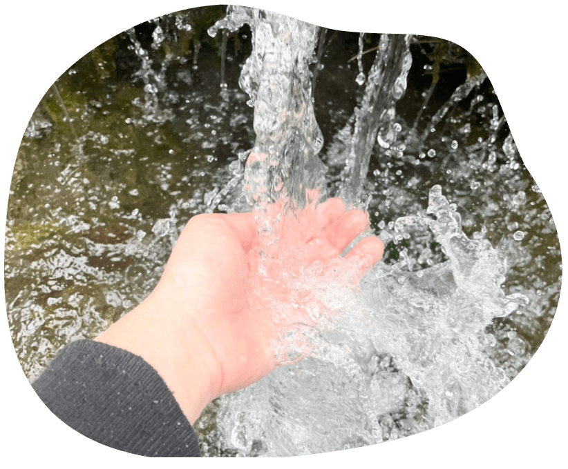
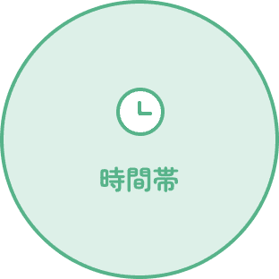
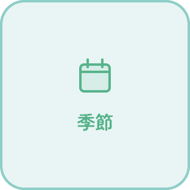
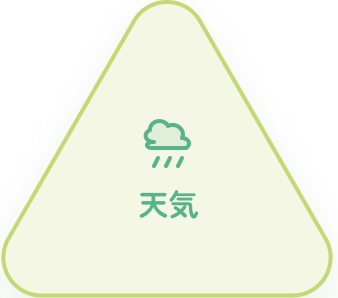

01大きく4つの音のグループから、自然の世界を紐解いてみましょう。
同じ場所でも、時間や天気が変われば聴こえる音はまるで違う。 3つの条件が重なり合って、その瞬間だけの音色が生まれます。



夜明けと共に始まる鳥たちの合唱。 春は1年で最も賑やか。
激しい夕立が過ぎ、静かに降り続く雨。 虫の声と交じり合う。
雪が音を吸い込む。世界が静まり返ったとき、 屋根から雪が落ちる音だけが響く。
知ったあとは、実際に耳をすませてみましょう。